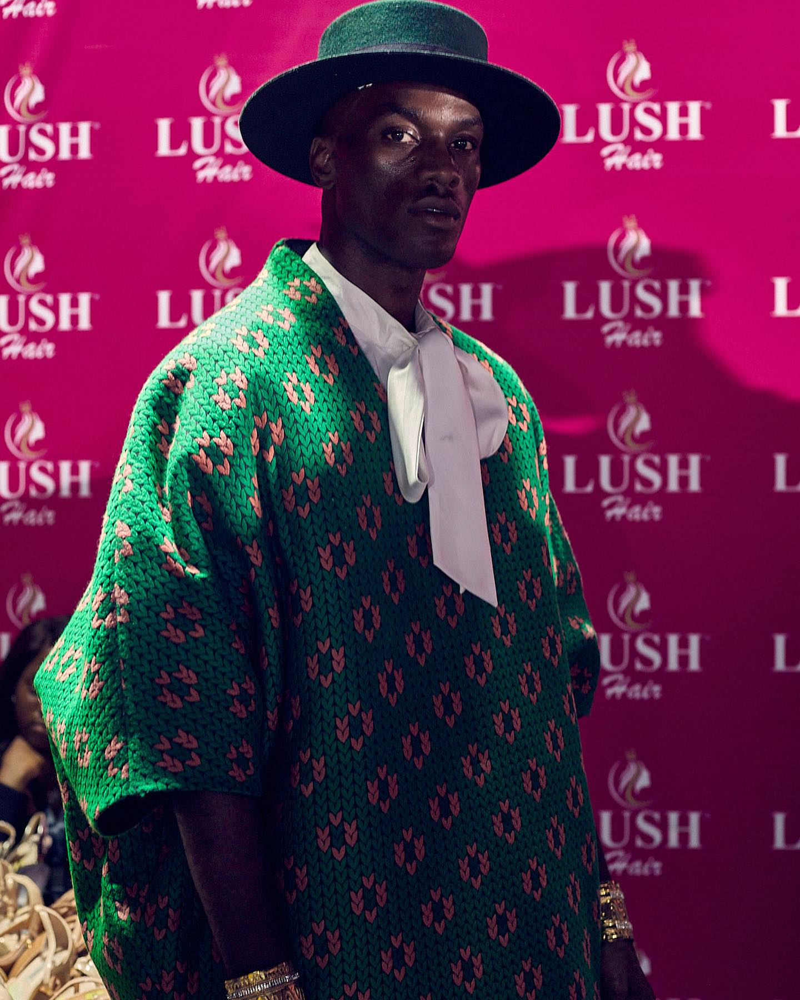
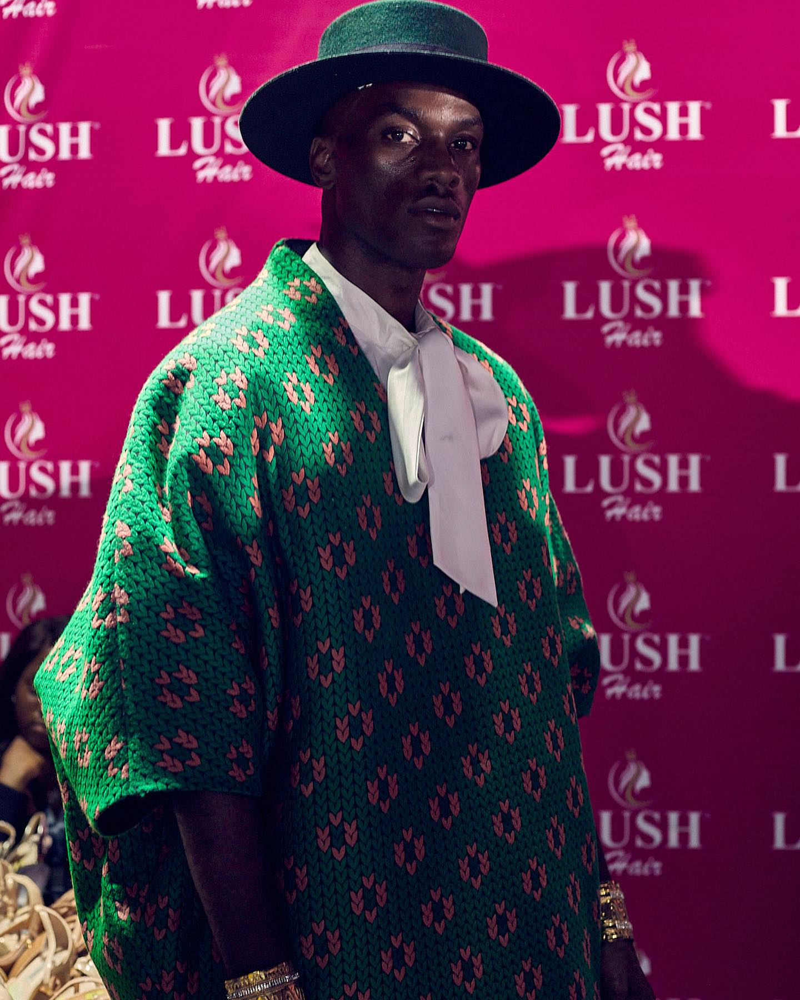

News
|
Retro Revival
The men's section featured a nod to retro styles with a contemporary twist. Vintage-inspired pieces such as wide-legged trousers, oversized blazers, and nostalgic color palettes made a stylish comeback on the Lagos runway. |
Bold Prints and Patterns
Men embraced bold prints and patterns, breaking away from traditional norms. Vibrant florals, geometric shapes, and abstract designs adorned shirts, jackets, and even accessories, adding a playful twist to the Lagos fashion scene. |
Dapper Street Style
Lagos Fashion Week showcased an array of dapper street styles for men, combining classic tailoring with contemporary flair. From well-tailored suits to statement accessories, the men's section was a celebration of modern elegance. |
|
Athleisure Dominance
The athleisure trend took center stage, with designers seamlessly blending comfort and style. Track pants, hoodies, and sneakers were reimagined with high-end fabrics and innovative designs, creating a fusion of sporty and sophisticated looks. |
Sustainable Fashion for Him
A notable theme was the rise of sustainable fashion for men. Designers showcased eco-friendly materials and ethical practices, emphasizing the importance of conscious choices in men's fashion. |
Cultural Fusion
Lagos Fashion Week celebrated cultural diversity, with designers infusing traditional Nigerian elements into modern menswear. From intricate embroidery to ethnic prints, the men's section showcased a beautiful fusion of heritage and contemporary fashion. |
Pieces
 
